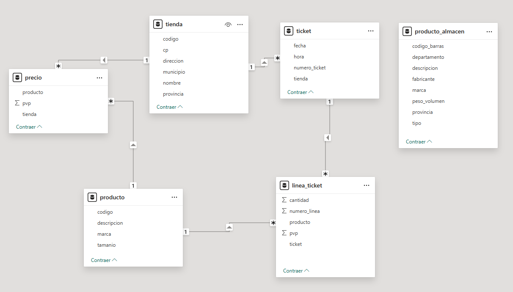

1 Metabase
- Vídeos:
- Parte 1: https://youtu.be/7YSpgQK8atc
- Parte 2: https://youtu.be/85m4qbebqQM
Metabase ofrece muchas posibilidades, nos vamos a centrar en lo imprescindible para entenderlo y desarrollar los ejercicios.
1.1 Acceder a Metabase
En primer lugar, iniciamos el servidor, ejecutamos el comando siguiente en la carpeta de instalación:
Accedemos a http://localhost:3000/
El resto de información necesaria sobre Metabase se encuentra en los vídeos asociados.
1.2 Obtención de los datos
Las bases de datos necesarias están disponibles en:
Descargaremos los archivos:
- Base de datos OLTP: Diseñada para operaciones transaccionales (
ventas_oltp_sqlite.zip).
- Base de datos OLAP: Optimizada para análisis multidimensional (
ventas_olap_sqlite.zip).
Los descomprimimos y situamos los archivos siguientes en una carpeta de trabajo:
ventas_oltp.sqliteventas_olap.sqlite
1.3 Bases de datos
SQLite es un sistema de gestión de bases de datos relacional ligero y autónomo que utiliza un único archivo para almacenar toda la base de datos. Sigue el estándar SQL.
Los archivos que hemos obtenido son dos bases de datos SQLite, cuyos esquemas se muestran a continuación.
1.3.1 Base de datos OLTP
En la figura 1.1 se muestra el esquema de la base de datos OLTP.

Figura 1.1: Base de datos OLTP.
1.3.2 Base de datos OLAP
En la figura 1.2 se muestra el esquema de la base de datos OLAP.

Figura 1.2: Base de datos OLAP.
En la figura 1.3 se muestra otra representación del esquema de la base de datos OLAP, una representación detallada en la que se pueden ver todos los campos de las tablas.

Figura 1.3: Representación de la base de datos OLAP con todos los campos.
1.4 Informe de ejemplo
El informe de ejemplo que vamos a desarrollar, tanto en la base de datos OLTP como en la base de datos OLAP, es el siguiente:
- Ventas por mes y provincia durante 2024.
| Mes | Provincia | Suma de Cantidad | Suma de Importe |
|---|
Donde \(Importe = Cantidad * PVP\).
Ejercicios
Todos los elementos que se definan en la actividad (conexión con la base de datos, modelo, informes, cuadros de mando, etc.) han de tener como nombre o prefijo tu nombre de usuario de correo electrónico.
Todos los ejercicios siguientes valen igual.
Punto de Partida
Este apartado no puntúa en la actividad.
Obtén las bases de datos OLTP y OLAP (apartado 1.2), en particular, los archivos:
ventas_oltp.sqliteventas_olap.sqlite
Ejercicio 1: Informe de ejemplo en Metabase (incluido en el vídeo)
Obtén el informe de ejemplo del apartado 1.4 a partir de la base de datos OLTP.
Obtén el mismo informe a partir de la base de datos OLAP.
Añade el informe obtenido de la base de datos OLAP, con dos formatos de presentación, a un cuadro de mando e incluye un campo de filtro.
Ejercicio 2: Informe libre
- Obtén un informe libre sobre resultados de las ventas a partir de la base de datos OLAP.
- Se valorará la originalidad del informe.
- Añade el informe libre al cuadro de mando del ejercicio anterior de manera que también esté conectado al filtro definido.
Documentación a entregar
Genera un documento en formato PDF con un apartado para cada ejercicio.
Para la definición de cada informe incluye:
- Captura de pantalla completa de la aplicación con la definición del informe.
- Si para la definición de los informes usas un modelo, incluye otra con la definición del modelo.
Para el cuadro de mando incluye:
- Explicación del campo de filtro incluido y cómo afecta a los informes.
- Captura de pantalla completa de la aplicación mostrando la definición del filtro.
- Dos capturas de pantalla completa de la aplicación mostrando cómo funciona el campo de filtro (antes y después de aplicarlo).